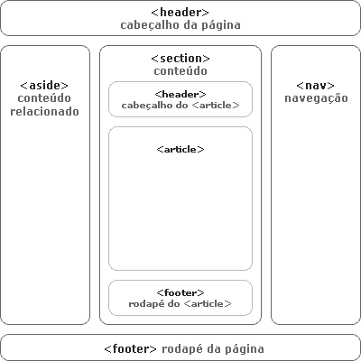
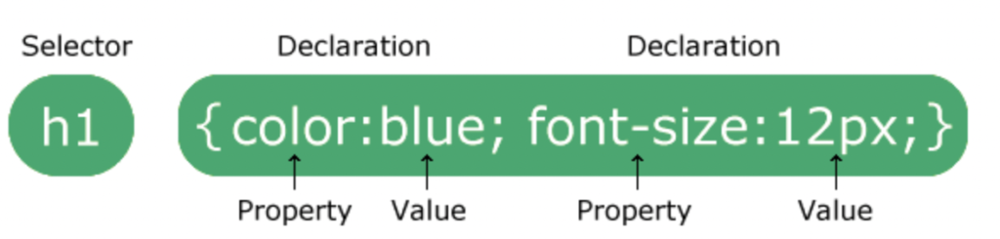
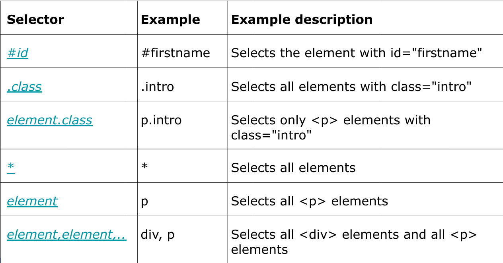

Disciplinas
-
FUNDAMENTOS DE WEB-T01-2024-1. Concluído
Materiais
Vídeo 1 - [UFMS Digital] Fundamentos de Web - Módulo 2. sendProf° ministrante: Luciano Édipo Pereira da Silva.
Conteúdo
HTML5 e CSS.
- Unidade 1 - Tags básicas do HTML5
- Unidade 2 - Modelo de objeto de documentos - DOM
- Unidade 3 - Principais atributos e seletores do CSS
- Unidade 4 - Formulários HTML
Modelo de objeto de documentos - DOM.
https://hermes.dio.me/articles/cover/bf4bf91b-576e-4186-a459-4ccd07723f5a.gif
Tags básicas do HTML5.
https://www.infowester.com/img_art/html5.png Fonte de ajuda:
https://cdn-1.webcatalog.io/catalog/w3schools/w3schools-icon-filled-256.webp?v=1714776411512Principais atributos e seletores do CSS.
https://2ends.com.br/wp-content/uploads/2022/12/Captura-de-Tela-2022-12-24-as-19.01.02-1024x245.png Seletores:
Bibliografia
- FLATSCHART, Fábio. HTML 5-Embarque Imediato. Rio de Janeiro: Brasport, 2011.
- MARINHO, Antônio Lopes; CRUZ, J. L. Desenvolvimento de aplicações para internet. São Paulo: Pearson Education do Brasil, 2017.
- MILETTO, Evandro Manara; DE CASTRO BERTAGNOLLI, Silvia. Desenvolvimento de Software II: Introdução ao Desenvolvimento Web com HTML, CSS, JavaScript e PHP. Porto Alegre: Bookman Editora, 2014.
- W3SCHOOLS. W3Schools Online Web Tutorials. Disponível em: